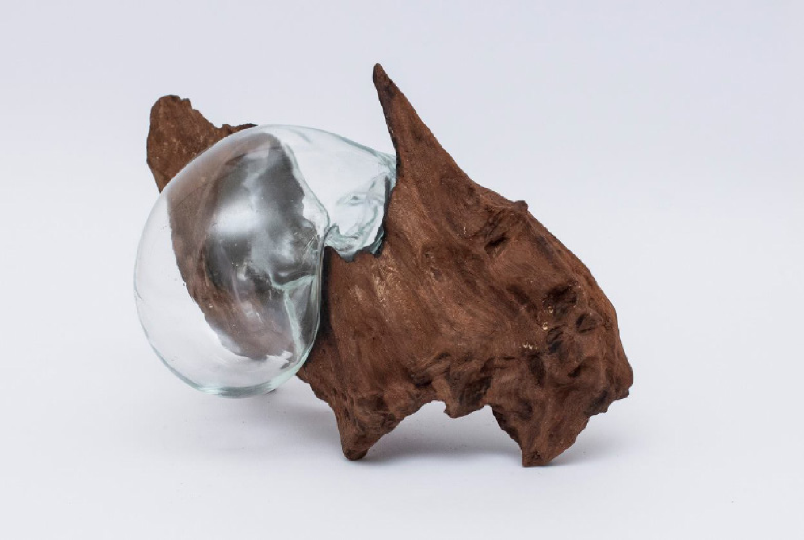

Estados Vazios
-
Autoria
Lucas Bevilaqua
-
Ano
2018

O Instituto de Artes da Uerj apresenta a edição anual do Olha Geral. A exposição reúne uma seleção da produção artística discente do ART-Uerj. O Instituto de Artes da Uerj apresenta a edição anual do Olha Geral. A exposição reúne uma seleção da produção artística discente do ART-Uerj.O Instituto de Artes da Uerj apresenta a edição anual do Olha Geral. A exposição reúne uma seleção da produção art.